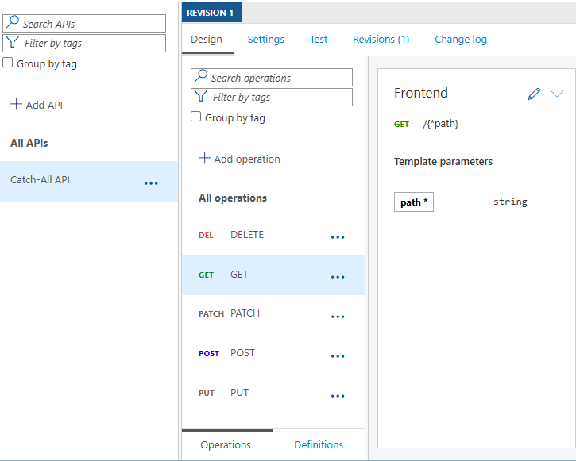

Catch-All API in Azure API Management: Forward Any Request

Usually when exposing APIs via Azure API Management, you define a clear contract using OpenAPI specifications. This ensures that consumers know exactly what endpoints are available, what parameters to use and what responses to expect. However, there are scenarios where you might want to forward any request to a backend service without defining a detailed API contract.
For this scenario, you can create what I like to call a ‘Catch-All API’. It allows you to accept requests for any path and method and simply forward them to a specified backend service.
A scenario where I used this approach in the past was when API Management was deployed inside a virtual network behind an Application Gateway and only a subset of APIs were exposed to the internet while others were only reachable from the internal network. To directly test these APIs, we deployed a version of the Catch-All API in our dev and test environments that routed traffic to those internal APIs so we could easily validate them.
In this blog post, I’ll walk you through how to set up a Catch-All API in Azure API Management using Bicep. To follow along with this post, you’ll need an Azure API Management service instance. If you don’t have one yet, you can use my Azure Integration Services Quickstart template to deploy one quickly.
The goal is straightforward: accept requests for a base path, regardless of nested path segments and query parameters, and forward them to a backend service. Instead of uploading or authoring a rich OpenAPI specification, we define minimal operations that cover the HTTP methods we care about and use a catch-all URL template.
Here’s a screenshot of a deployed example in API Management that forwards to an echo backend:

As you can see, it has operations for GET, POST, PUT, PATCH and DELETE methods, all using the same URL template /{*path}. This URL template captures any number of path segments into a template parameter named path. Query parameters are passed through as-is to the backend.
Here’s a condensed version of the Bicep code that creates the Catch-All API:
var httpMethodsToCatch string[] = [
'GET'
'POST'
'PUT'
'PATCH'
'DELETE'
]
resource catchAllApi 'Microsoft.ApiManagement/service/apis@2024-10-01-preview' = {
name: 'catch-all-api'
parent: apiManagementService
properties: {
displayName: 'Catch-All API'
path: 'catch-all'
type: 'http'
serviceUrl: 'https://echo.playground.azure-api.net/api'
protocols: [
'https'
]
subscriptionRequired: false
}
// Add a 'catch-all' operation for each specified method
resource operations 'operations' = [for method in httpMethodsToCatch: {
name: method
properties: {
displayName: method
method: method
urlTemplate: '/{*path}'
templateParameters: [
{
name: 'path'
type: 'string'
required: true
}
]
}
}]
}
At a high level, the Bicep template does the following:
- Defines a list of HTTP methods to support (for example GET, POST, PUT, PATCH and DELETE)
- Creates an API named Catch-All with base path
catch-all - Points
serviceUrlto an echo backend (https://echo.playground.azure-api.net/api) - For each method, adds an operation with
methodset explicitly andurlTemplateas/{*path}
You can deploy a working sample with the Bicep file in my repo: catch-all-api.bicep. To deploy it, run the following Azure CLI command. Replace <your-resource-group-name> and <your-api-management-service-name> with your values.
az deployment group create `
--name "deploy-catch-all-api" `
--resource-group "<your-resource-group-name>" `
--template-file './catch-all-api.bicep' `
--parameters apiManagementServiceName="<your-api-management-service-name>" `
--verbose
Note: You need to create an operation for each HTTP method you want to support. A wildcard like
*doesn’t work. I did deploy an API with*as the HTTP method and the operation appeared in the Azure Portal without specifying a method. The OpenAPI spec showed it as GET, but the operation didn’t work and returned 404 Operation Not Found. Only after explicitly setting the HTTP method to, for example, GET did I get a valid response.
You can try out the API using requests from the sample repo: tests.http. Replace the base URL variable with your API Management hostname and send GET, POST, PUT, PATCH and DELETE requests to arbitrary paths (e.g. /resource?param=foo). The backend service will echo back what it received.
While the example focuses on routing, you can still add policies at the API or operation level to add logic such as rewriting URLs, transforming payloads or handling authorization. This lets you keep the catch-all surface simple while applying logic where needed.
Although this API setup is quite flexible, there are some considerations to keep in mind:
- There’s no clear API contract for consumers, so the experience in e.g. the Developer Portal is limited
- Request logging is tied to the per-method operation (GET or POST) and not broken down further by explicit operations
- The backend must handle arbitrary paths and queries gracefully
- Align with your security posture; broad routing can expose unintended behavior if misconfigured
A Catch-All API in Azure API Management is a pragmatic tool for testing and routing scenarios, for example when API Management sits behind App Gateway and internal APIs are private. By defining per-verb operations with the /{*path} template and deploying via Bicep, you get simple, repeatable infrastructure that forwards any path to a chosen backend.